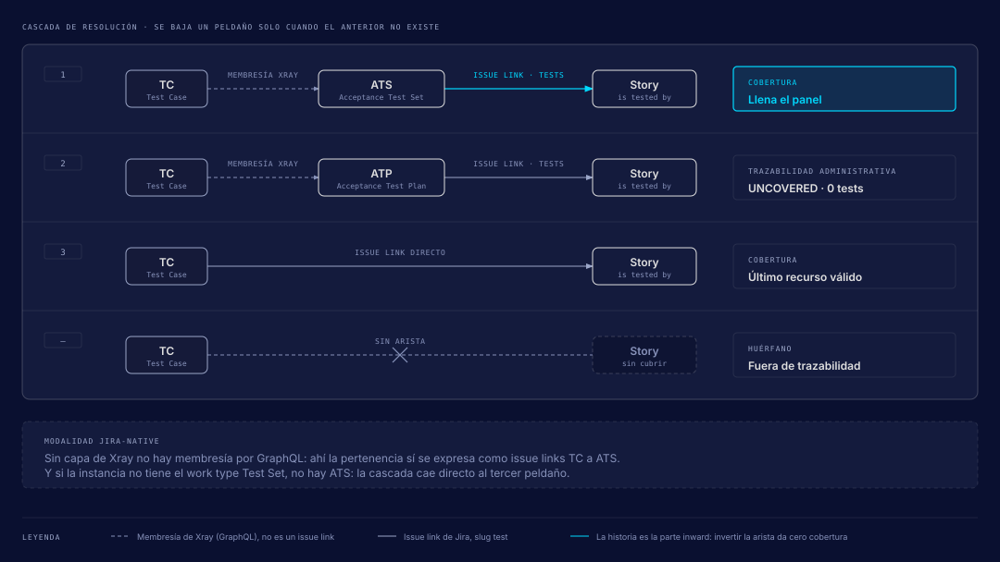
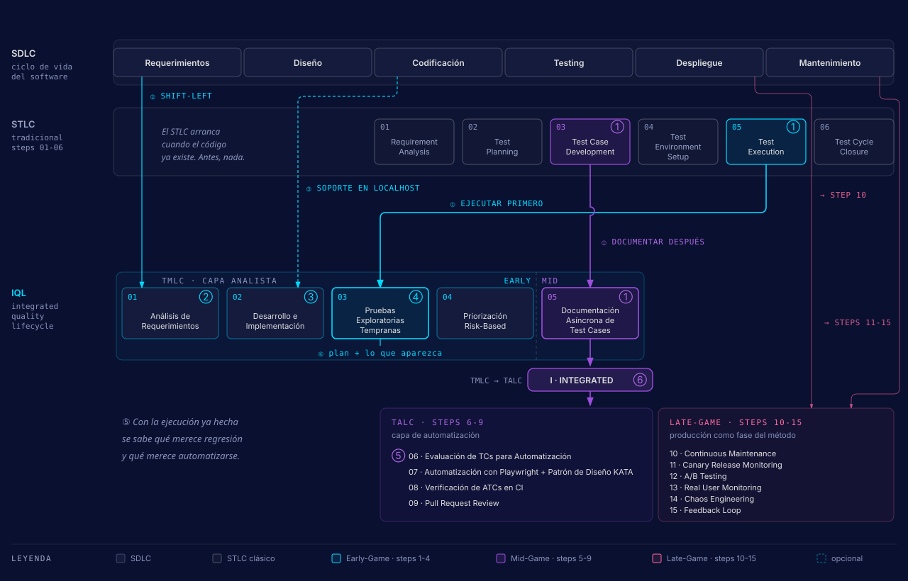

IQL: Integrated Quality Lifecycle
La metodología de calidad de UPEX y la que sigue este repo. Lleva el trabajo de QA en una sola línea desde el requerimiento hasta producción, en lugar de dejar el testing como una fase separada al final. Esta página resume el método completo y te manda a la página de cada fase cuando necesitas el detalle.
El sitio oficial define el método: upexgalaxy.com/metodologia (español) y upexgalaxy.com/en/methodology (inglés). Esta página es el resumen para quien trabaja en este repo. Si algo de aquí contradice al sitio, manda el sitio.
El IQL de un vistazo
El método se describe con cuatro números. Cada uno responde a una pregunta distinta, y conviene no mezclarlos:
| Unidad | Cuántas | Qué es |
|---|---|---|
| Fases | 3 | Early-Game (prevención), Mid-Game (detección) y Late-Game (observación). |
| Stages | 8 | Lo que se ejecuta y se gatea. Cada stage tiene nombre, nunca número, y una skill dueña (salvo Observation). |
| Steps | 15 | El desglose de los stages. Van numerados del 1 al 15. |
| Ciclos | 5 | TMLC, TALC, SDC, BLC y PLC: los ciclos que corren por dentro. |
| Altitudes | 4 | Producto, Feature, Sprint e Historia. Cada altitud tiene su plan (MTP, FTP, STP, ATP). |
El lugar de la IA en el método cabe en una frase que el sitio deja en inglés: Agent executes. Evidence proves. Human owns the decision. El agente ejecuta las skills, la evidencia respalda cada conclusión y la persona decide qué se prioriza, qué se automatiza y qué se aprueba.
Las tres fases
Cada fase tiene un rango de steps, un rol protagonista y una pregunta de fondo. El detalle de cada una está en su propia página.
Early-Game
Steps 1-4. Protagonista: QA Analyst. Pregunta: «Construyámoslo bien desde el principio». Análisis de la historia, exploración temprana y priorización por riesgo.
Fase 2 · DetecciónMid-Game
Steps 5-9. Protagonista: QA Automation Engineer. Pregunta: «¿El software cumple con los requerimientos?». Documentación de casos, gate de ROI y automatización.
Fase 3 · ObservaciónLate-Game
Steps 10-15. Protagonista: QA + DevOps. Pregunta: «¿Cómo se comporta en el mundo real?». Regresión, release y señales de producción.
Los cuatro bloques de madurez
El método también se lee en cuatro bloques. Cada uno ataca un problema concreto y deja un resultado. Son los mismos cuatro niveles de madurez (L1 a L4) con los que un equipo decide hasta dónde implementar.
| Bloque | Problema que ataca | Resultado | Stages | Steps |
|---|---|---|---|---|
| L1 · Prevention | Los defectos más caros nacen en historias ambiguas, antes de que exista código. | Historias con criterios verificables y un plan de aceptación por historia antes de que arranque el sprint. | Shift-Left, Planning | 1, 2 |
| L2 · Early Detection | Un bug encontrado después del merge cuesta el retrabajo de todo el equipo. | Feedback al desarrollador antes del pull request, con evidencia real y bugs priorizados por riesgo. | Execution, Reporting, Documentation | 3, 4 |
| L3 · Continuous Detection | Repositorios de casos que nadie mantiene y suites automatizadas en las que nadie confía. | Regresión confiable en CI: solo se documenta y automatiza lo que demostró valor, y corre en cada pull request. | Documentation, Automation, Regression | 5-10 |
| L4 · Production Observation | Lo que pasa en producción no vuelve al backlog. | Las métricas reales de producción deciden qué observar, qué probar y qué mejorar en el siguiente ciclo. | Observation | 11-15 |
El IQL define qué observar y qué mejorar. El nivel de madurez del equipo fija hasta dónde se implementa el Late-Game, y los targets concretos los pone cada producto.
El bucle completo
El ciclo vuelve sobre sí mismo. Los 8 stages se agrupan en cuatro momentos (antes del sprint, dentro del sprint, cierre y release, producción) y alrededor están los eventos del SDLC que producen artefactos sin ser stages. El diagrama dibuja tres flechas de vuelta que un modelo lineal no tiene: el defecto que reabre la ejecución (defecto, fix, retest), el NO-GO de la regresión que devuelve el release a la automatización, y las señales de producción que alimentan el Shift-Left siguiente.

La vuelta de producción al análisis tiene un mecanismo con nombre: el error budget, la escape rate y la change failure rate. Si ningún número vuelve al step 1, el último step es un final y el bucle se corta.
Principios e invariantes
Lo que no cambia aunque cambien el stack, el tracker o el cliente. El sitio les da un identificador corto a cada uno; aquí van con su idea central.
| # | Principio | Qué dice |
|---|---|---|
| 1 | La coreografía es el aporte | Shift-Left, risk-based, CI y observabilidad ya existían. El IQL aporta el orden: entender, planificar, explorar, aprender, priorizar por riesgo y ROI, documentar lo que merece vivir, automatizar lo que lo merece, integrarlo a CI, observar producción y retroalimentar. |
| 2 | Ejecutar primero, documentar después | Antes del sprint ya existen el análisis, el FTP y el ATP. Se explora contra ese plan y, con evidencia real, se decide qué escenarios se vuelven casos persistentes. |
| 3 | Todo se prioriza por riesgo | Qué historias se exploran primero, qué atributos de calidad aplican y qué casos se documentan. Nada entra a la suite por costumbre. |
| 4 | Un caso se persiste por su ROI | Solo se persiste y automatiza lo que demostró valor de regresión. El veredicto (Candidate, Manual, Deferred) se decide en el step 4 y se estampa en el 6. |
| 5 | El manual alimenta al automatizado | El QA Analyst produce candidatos que entran directo al ciclo del QA Automation Engineer. Esa costura TMLC ↔ TALC es la I de Integrated. |
| 6 | Cada step deja un artefacto y un gate | MTP, FTP, STP/STR, ATP/ATS/ATR y el ATC. Los gates son las transiciones del tracker: sin artefacto no hay paso siguiente. |
| 7 | El step 2 sincroniza con el SDLC | Es el período en que desarrollo construye y QA trabaja en paralelo. Cuenta entre los 15 para que el ciclo se lea completo, y se dibuja distinto. |
| 8 | El IQL absorbe al STLC | Es un operating model de Software Quality Engineering que mete las actividades del STLC dentro del SDLC y las extiende hasta producción. |
| 9 | La madurez fija hasta dónde | El nivel de madurez decide cuánto Late-Game se implementa. |
| 10 | El agente ejecuta, la persona decide | Agent executes. Evidence proves. Human owns the decision. |
| 11 | Quien verifica no es quien ejecutó | Otro agente revisa, en contexto limpio y contra el artefacto original: los veredictos de ROI contra el ATR, el código contra el plan aprobado. |
| 12 | Al agente también se lo mide | Cada stage tiene su golden set (un ATP de referencia, un veredicto de ROI de referencia, una clasificación de fallas de referencia) y sus evals. Sin eso no hay cómo justificar subirle autonomía. |
| 13 | Es un bucle, no una fila | Producción vuelve al step 1 a través del error budget y la escape rate. |
Las tres costuras de la I
-
Humano ↔ agente ↔ evidencia
Cada stage las cose con su contrato: qué hace el agente, qué firma la persona y qué evidencia exige el gate. Esta costura es la que hace agéntico al método.
-
TMLC ↔ TALC
Los candidatos del QA Analyst alimentan al QA Automation Engineer, y el gate de ROI decide cuáles pasan. Es la costura original del método.
-
STLC dentro del SDLC
Las actividades del STLC se reparten por el SDLC y llegan hasta producción. El step 2 es el punto donde las dos líneas se sincronizan.
Modo light y lo que nunca se colapsa
Algunos gates se pueden colapsar en un sprint concreto. Lo decide el QA Lead, por escrito en el STP, y la decisión no se hereda al sprint siguiente. Cada gate colapsado deja un ítem de deuda en el backlog con su condición y su fecha; sin esa nota, el gate se perdió.
| Gate colapsable | Condición | Costo |
|---|---|---|
| El ATP como ítem Test Plan del stage Planning |
El ATP existe en el campo acceptance_test_plan y el sprint ya tiene
STP.
|
La historia no aparece en el panel de cobertura hasta que se cree el ítem. |
| La promoción de casos al Test Set de feature | La feature tiene una sola historia viva, o el TS ya existe. | El smoke de la feature se arma a mano el sprint siguiente. |
| El verificador de los veredictos de ROI | Menos de cinco escenarios y ninguno en Candidate. | La alarma de más del 50% en Candidate o Manual pierde su control. |
| El histórico de cinco corridas para declarar FLAKY | La falla se reproduce a mano y el reporte la registra como INSUFFICIENT HISTORY. | Una regresión real puede archivarse como flaky. |
El ATR con su Test Environment declarado. El acuerdo humano explícito antes de filear cada bug. La aprobación del plan de automatización antes de escribir código. La aprobación humana del merge.
Los 8 stages y su contrato agéntico
El stage es lo que se ejecuta y lo que se gatea. Cada uno declara qué hace el agente, qué firma la persona, qué evidencia exige y con cuánta autonomía corre, en una escala de 0 a 5.
| Stage | Momento | Fase | Nivel | Skill dueña | Steps |
|---|---|---|---|---|---|
| Shift-Left | Antes del sprint | Early-Game | L1 | shift-left-testing |
1 (mitad pre-sprint) |
| Planning | Dentro del sprint | Early-Game | L1 | sprint-testing |
1 (mitad in-sprint) |
| Execution | Dentro del sprint | Early-Game | L2 | sprint-testing |
3 (ejecución) |
| Reporting | Dentro del sprint | Early-Game | L2 | sprint-testing |
3 (registro) |
| Documentation | Cierre y release | Early-Game, Mid-Game | L3 | test-documentation |
4, 5, 6 |
| Automation | Cierre y release | Mid-Game | L3 | test-automation |
7, 8, 9 |
| Regression | Cierre y release | Late-Game | L3 | regression-testing |
10 |
| Observation | Producción | Late-Game | L4 | Ninguna todavía (rutina agéntica) | 11-15 |
El contrato de cada stage
| Stage | El agente hace | La persona firma | Autonomía | Verificador separado |
|---|---|---|---|---|
| Shift-Left | Reescribe los criterios en Given/When/Then con datos concretos, redacta los gaps como preguntas al PO o al dev, escribe el ATP en el campo de la historia y aplica el Test-Design Checklist. No crea ninguna entidad en el TMS. |
El lote de historias y el resumen por historia. Contesta los gaps. La historia nunca
pasa de Estimation.
|
2 | No hace falta |
| Planning | Crea el ATS primero y de ahí deriva el ATP y el ATR vacío. Deriva los casos según la modalidad, decide por triage, veto y risk-score qué superficies UI/API/DB entran, y crea o encuentra el STP y el FTP. | La explicación de la historia: el agente explica qué entendió y espera el OK. | 2 | No hace falta |
| Execution | Corre el smoke como Go/No-Go, ejecuta lo planificado y explora más allá por UI, API y DB. Propone cada hallazgo clasificado (Bug, Defect o Improvement) con su severidad. | El triage y el fileo de cada hallazgo. Recalibra a mano toda severidad de seguridad o autenticación. | 3 | No hace falta |
| Reporting | Llena el ATR caso por caso, escribe el comentario de QA, resuelve los enlaces y anota el follow-up de regresión. | La transición: el sign-off de la historia o el reporte del defecto. | 2 | No hace falta |
| Documentation | Deriva escenarios por técnica, calcula el ROI y propone exactamente un veredicto por escenario (Candidate, Manual o Deferred). Persiste solo los que valen para regresión. | Cada veredicto de ROI, la épica de regresión y el Test Set de feature. | 2 | Recomendado (un segundo agente) |
| Automation |
Escribe el plan, implementa sobre KATA con el decorador @atc, corre los
tres verificadores (tests, tipos, lint) y abre el pull request.
|
El plan antes de la primera línea de código, el merge, y la decisión de seguir o parar al tercer intento fallido. | 2 → 3 dentro del plan aprobado | Obligatorio (pr-review-lead o judgment-day) |
| Regression | Ejecuta la suite, clasifica cada falla (REGRESSION, FLAKY, KNOWN, ENVIRONMENT o NEW TEST), calcula pass-rate y tendencia, propone GO, CAUTION o NO-GO y arma el STR. | Todo CAUTION. Nunca deja que se invente el número de sprint. | 3 | No hace falta |
| Observation | Vigila objetivos de servicio, error budget, monitoreo de usuarios reales y cohortes de canary. Abre ítems al backlog cuando una señal sale de rango. | Los objetivos de servicio, la política de error budget y cuándo se detiene un release. | 3 | No aplica todavía |
La evidencia que exige cada gate, las transiciones de Jira y el detalle de cada stage están
en las páginas de fase (Early-Game,
Mid-Game, Late-Game) y en
Observation. En el repo, el contrato vive en
.agents/skills/agentic-qa-core/references/stage-gates.md.
Eventos del SDLC que no son stages
Cuatro momentos producen artefactos sin ser un stage del método:
| Evento | Artefacto | Cuándo | Quién lo produce |
|---|---|---|---|
| Onboarding del producto | MTP | Una vez por producto | /project-context test-plan |
| Apertura de sprint | STP | En el primer ticket del sprint | /sprint-testing (find-or-create) |
| Desarrollo e implementación | Ninguno | In-sprint (step 2) | El equipo de desarrollo |
| Cierre de sprint | STR | Post-sprint |
/sprint-testing o /regression-testing, el primero que
llegue
|
Si el tracker del cliente no tiene el work type de plan, el evento del STP se saltea con una nota declarada, nunca en silencio. El STR tampoco suma los ATR: los ATR se leen junto a él.
Los 15 steps
Los steps son el desglose de los stages. Dos detalles para leer la tabla: el step 1 y el 3 se reparten entre dos stages cada uno, y el step 2 es el único que no pertenece a ningún stage porque es trabajo de desarrollo.
| Step | Nombre | Fase | Ciclo / etapa | Stage |
|---|---|---|---|---|
| 1 | Análisis de Requerimientos | Early-Game | TMLC 1st | Shift-Left + Planning |
| 2 | Desarrollo e Implementación | Early-Game | Sincronización con el SDLC | Ninguno |
| 3 | Pruebas Exploratorias Tempranas | Early-Game | TMLC 2nd | Execution + Reporting |
| 4 | Priorización Risk-Based | Early-Game | TMLC 3rd | Documentation (Prioritize) |
| 5 | Documentación Asíncrona de Test Cases | Mid-Game | TMLC 4th | Documentation (Document) |
| 6 | Evaluación de TCs para Automatización | Mid-Game | TALC 1st | Frontera Documentation / Automation |
| 7 | Automatización de los candidatos | Mid-Game | TALC 2nd | Automation |
| 8 | Verificación de la suite en CI | Mid-Game | TALC 3rd | Automation |
| 9 | Revisión del Pull Request | Mid-Game | TALC 4th | Automation |
| 10 | Continuous Maintenance | Late-Game | Production Ops | Regression |
| 11 | Canary Release Monitoring | Late-Game | Shift-Right | Observation |
| 12 | A/B Testing | Late-Game | Experimentation | Observation |
| 13 | Real User Monitoring (RUM) | Late-Game | Observability | Observation |
| 14 | Chaos Engineering | Late-Game | Resilience | Observation |
| 15 | Feedback Loop | Late-Game | Continuous Learning | Observation |
El sitio marca los steps 11 a 15 como «Panorama»: están declarados, pero el boilerplate no cubre Shift-Right y ninguna skill los ejecuta.
Los ciclos internos
Dentro del IQL corren cinco ciclos. Dos son nombres pedagógicos de UPEX para agrupar steps; en este repo el trabajo se organiza por stages. Los otros tres son máquinas de estado del tracker, o lo serán.
| Ciclo | Nombre | Qué recorre | Tipo |
|---|---|---|---|
| TMLC | Test Manual Life Cycle | 4 etapas: análisis (step 1), exploración (3), priorización (4), documentación (5). | Pedagógico |
| TALC | Test Automation Life Cycle | 4 etapas: evaluación (step 6), automatización (7), verificación en CI (8), revisión del PR (9). | Pedagógico |
| SDC | Story Development Cycle | El workflow de la User Story. Shift-Left vive entre Backlog y Estimation; Execution y Reporting, entre In Test y QA Approved. | Workflow real de Jira |
| BLC | Bug Life Cycle | El workflow del hallazgo, compartido por Bug, Defect e Improvement. | Workflow real de Jira |
| PLC | Production Lifecycle | Señal, ítem, decisión y retorno al análisis. Su stage es Observation. | Declarado y vacío hasta que exista la skill |
Mapa de los nombres pedagógicos a los stages: TMLC 1st es Shift-Left y Planning; TMLC 2nd es
Execution y Reporting; TMLC 3rd y 4th son Documentation; TALC 1st es la frontera entre
Documentation y Automation; TALC 2nd a 4th son Automation. Los estados del SDC y del BLC
salen de .agents/jira-workflows.json.
Candidate y MANUAL son estados del Test Case y también veredictos de ROI. Deferred es un veredicto de ROI y también un estado terminal del Bug. El veredicto y el estado comparten nombre, pero son cosas distintas.
Dos modalidades: jira-native y jira-xray
La modalidad decide cuándo un Test Case se vuelve work item del TMS. Cambia con la
herramienta; el método es el mismo. La modalidad se resuelve por sondeo: si no hay Xray
configurado (tms_cli: null), el repo cae en jira-native. La
instancia de UPEX trabaja en jira-xray.
jira-native (default) |
jira-xray |
|
|---|---|---|
| En Planning | Solo outlines dentro del ATP. | Los casos se crean y se ejecutan, porque en Xray el issue Test es la unidad de ejecución. |
| En Documentation | Se crean los Test para los escenarios Candidate o Manual. Un issue Test nativo ya es documentación, así que espera al gate de ROI. | Los Test existentes se enriquecen y los regression-worthy se promueven al Regression Test Plan. El resto queda como artefacto de sprint. |
| Steps donde cambia el trabajo | 4, 5 | 3, 4, 5 |
En las dos modalidades, el set de regresión persistente se decide por ROI en Documentation. Nunca se asume en Planning.
La escalera de artefactos
La planificación sube por cuatro altitudes: producto, feature, sprint e historia. El primer token del nombre dice la altitud y si el artefacto es plan o resultado: en la sigla, la P marca un plan (Plan) y la R, una corrida (Results).
{ACRONYM}: {scope-id}: {descriptor}
ATP: PROJ-123: Apply discount at checkout
STR: Sprint#30: Regression Testing| Sigla | Nombre | Altitud | Tipo | Cardinalidad |
|---|---|---|---|---|
| MTP | Master Test Plan | Producto | Plan (Epic QA Master Test Plan + archivo local) |
1 por producto |
| FTP | Feature Test Plan | Feature (Epic) | Plan, documento vivo que se refina a lo largo de la épica | 1 por feature |
| STP | Sprint Test Plan | Sprint | Plan | 1 por sprint |
| STR | Sprint Test Results | Sprint | Results, cierra el STP | 1 por sprint |
| ATP | Acceptance Test Plan | Historia | Plan. Pre-sprint vive solo en el campo de la historia | 1 por historia |
| ATS | Acceptance Test Set | Historia | Cobertura (Test Set). Se crea primero | 1 por historia, obligatorio aunque tenga un solo caso |
| ATR | Acceptance Test Results | Historia | Results, siempre con Test Environment | 1 corrida («Story Testing») |
| TC / ATC | Test Case / Acceptance Test Case | Caso | Capa TMS. Un ATC es un TC que nace de un criterio de aceptación | Los que haga falta |
| TS | Test Set | Feature o módulo | Agrupación opcional para smoke o regresión | Opcional |
| RTP | Regression Test Plan | Producto (regresión) | Plan sin estado terminal, vive mientras viva el producto | 1 por proyecto o por módulo |
| RTR | Regression Test Results | Producto (regresión) | Results | 1 por veredicto de regresión |
La A de ATC es de Acceptance, nunca de Automated. Cuando el caso se automatiza, el decorador
@atc('PROJ-101') nombra su representación en código: es el mismo ATC. RTP y RTR
vienen de la convención de este repo
(.agents/skills/agentic-qa-core/references/planning-ladder.md); el sitio
oficial nombra la escalera de MTP a ATR.
La cascada de cobertura
El ATS se crea antes que el ATP y el ATR porque los dos derivan de él su lista de casos. Su enlace a la historia es el único que llena el panel de cobertura: una historia enlazada solo a su plan y a su ejecución se lee UNCOVERED, con cero casos.

El modelo Analyst + Automation Engineer
El IQL reparte el trabajo entre dos roles que avanzan en paralelo y de forma asíncrona. El sitio lo explica con una nave de LEGO:
- QA Analyst (Ana)
- Antes de tocar una pieza, escribe las reglas que hacen buena a la nave: dos alas que no se caen, una puerta que abre y cierra, un botón rojo que hace «¡Bip-Boop!». Es el Early-Game: análisis, exploración y la decisión de qué merece quedarse.
- QA Automation Engineer (Leo)
- Mientras otros construyen, arma robots que verifican cada regla solos. Cuando la nave está lista, los robots la revisan en un minuto y dicen qué arreglar. Es el Mid-Game: automatización, CI y pull request.
Después, Ana mira cómo juegan los amigos y usa lo que ve para escribir mejores reglas. Esa vuelta es el Late-Game alimentando el siguiente ciclo. El punto de entrega entre los dos roles es la salida del step 5 hacia el step 6.
STLC contra IQL
El STLC clásico trata el testing como una etapa con principio y fin, y arranca cuando el código ya existe. El IQL conserva esas actividades y las reparte por todo el SDLC, desde el requerimiento hasta producción.

| Cambio | STLC clásico | IQL |
|---|---|---|
| Orden de ejecutar y documentar | Test Case Development (03) antes de Test Execution (05). | Explora en el step 3 y documenta en el step 5, sabiendo ya qué casos valen la pena. Es el cambio de mayor peso. |
| Shift-left | Nada antes de la codificación. | El plan de pruebas participa desde requerimientos y diseño. |
| Durante la codificación | Sin actividad de QA. | QA acompaña a desarrollo y puede probar incluso en localhost. Es opcional: lo normal sigue siendo esperar el despliegue. |
| Ejecución del plan | Guion rígido, paso a paso. | Exploratoria: lo que indica el plan más lo que aparezca en el camino. |
| Regresión y automatización | No aparecen contempladas. | El step 6 decide qué se automatiza con la ejecución ya hecha como insumo. |
| Producción | El ciclo cierra en Test Cycle Closure. | El step 10 nace en el despliegue y los steps 11-15 viven en mantenimiento. |
Los enfoques que integra
El sitio lista ocho enfoques de testing que el IQL integra. Ninguno es invento de UPEX: lo que el IQL agrega es el orden (en qué fase se aplica cada uno, con qué entregable y quién lo ejecuta). El único que corre en las tres fases es AI-Driven Testing: agentes que analizan, generan y mantienen el trabajo de calidad. Ejecutar, observar y juzgar si algo es un defecto sigue siendo tarea del QA, que firma la clasificación final. La lista completa de los ocho está en la página oficial.
La Trifuerza
La Trifuerza (antes llamada Tridente) es el modelo de exploración del stage Execution: las tres capas que recorres para validar una feature. También es el conocimiento mínimo que UPEX le pide a un QA.
| Capa | Nombre | Qué valida |
|---|---|---|
| UI | System Testing (E2E / frontend) | El flujo completo desde la interfaz. |
| API | Logic Layer Testing (backend) | La lógica de negocio. |
| DB | Data Layer Testing | La capa de datos. |
El orden importa: primero el smoke valida el entorno, después la Trifuerza valida la feature. Saltarse el smoke es el anti-patrón clásico.